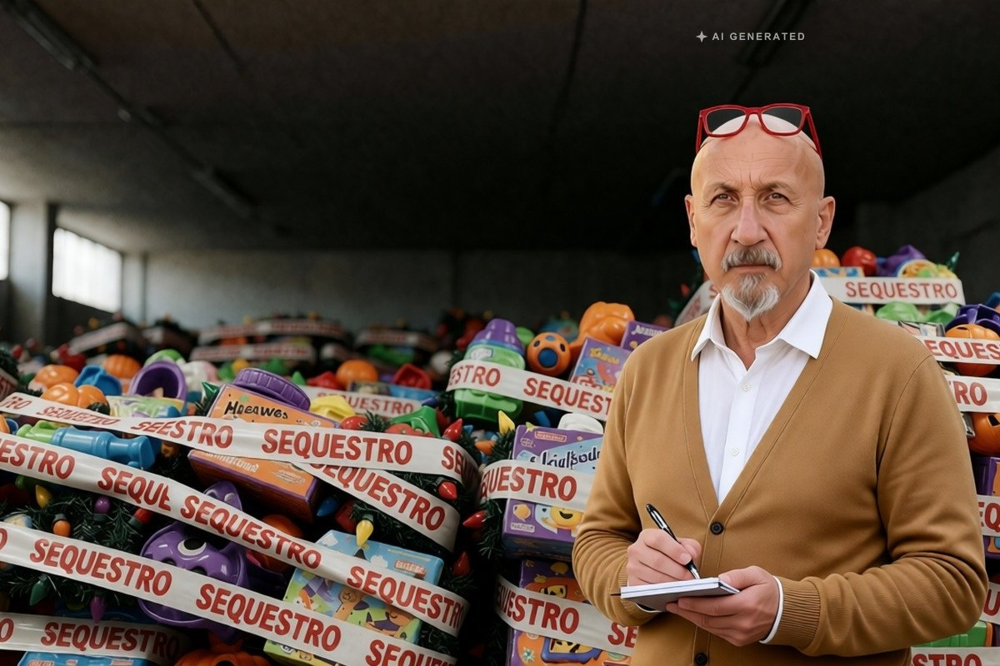

Cronaca · 2 novembre 2026
Due milioni di giocattoli e addobbi non sicuri sequestrati nel Palermitano

La Guardia di finanza ha sequestrato circa 2 milioni di articoli fra giocattoli, addobbi, decorazioni e accessori in due negozi di Carini e Borgetto e sul banco di un ambulante a Palermo. Tre titolari denunciati.
di Franco Zanghì
Due milioni di pezzi. Non di euro: di articoli. Giocattoli, addobbi, decorazioni e accessori che, secondo la Guardia di finanza, non rispettavano le norme sulla sicurezza dei prodotti. Erano in due negozi, a Carini e a Borgetto, e sul banco di un venditore ambulante a Palermo.
Il controllo
Alla vigilia di Halloween, e con le feste di Natale che si avvicinano, il comando provinciale della Guardia di finanza di Palermo ha intensificato i controlli sulla merce in vendita. Nei due negozi e dall’ambulante i finanzieri hanno trovato articoli messi in commercio, secondo l’accusa, senza rispettare le norme sulla sicurezza dei prodotti e senza le indicazioni corrette sull’origine e sulla provenienza.
Il sequestro è stato convalidato. I tre titolari sono stati denunciati: le loro responsabilità sono tutte da accertare.
Il controllo non ha riguardato un singolo articolo ma interi assortimenti: la merce stava su scaffali aperti al pubblico, in punti vendita e su un banco di strada, cioè nei posti dove la gente compra senza farsi domande.
Perchè un giocattolo fuori regola è un problema
Un giocattolo che non ha superato i controlli può contenere sostanze vietate, pezzi piccoli che si staccano, vernici che non dovrebbero finire nelle mani di un bambino. Chi lo compra, di solito, non lo sa: lo compra perchè costa poco. E una decorazione elettrica fatta male può prendere fuoco.
È il motivo per cui questo tipo di merce finisce al centro dei controlli proprio nelle settimane delle feste, quando la domanda sale e con la domanda sale anche l’offerta irregolare.
Che cosa guardare prima dei regali
Tre cose semplici, prima dei regali di Natale. La marcatura CE sulla confezione e le istruzioni in italiano. Il nome del produttore, che su un prodotto regolare c’è sempre. E il prezzo: quando è troppo basso rispetto a un articolo simile, è un segnale da non ignorare.
Un ultimo dettaglio pratico: se un giocattolo ha un forte odore di plastica, è meglio lasciarlo sullo scaffale.
Restano due domande. Come arrivano due milioni di pezzi sugli scaffali senza che nessuno se ne accorga prima? E quanti altri ce ne sono, nei negozi e sui banchi, che nessuno ha ancora controllato?
Fonti
- LiveSicilia, 31 ottobre 2026
- PalermoToday, 31 ottobre 2026
- Tp24, 31 ottobre 2026
- PartinicoLive, 31 ottobre 2026
Le quattro testate riprendono il comunicato della Guardia di finanza. Alcune indicano Partinico al posto di Carini fra i comuni dei due negozi; qui si seguono le fonti che citano Carini e Borgetto. Il valore della merce sequestrata non è stato reso noto.